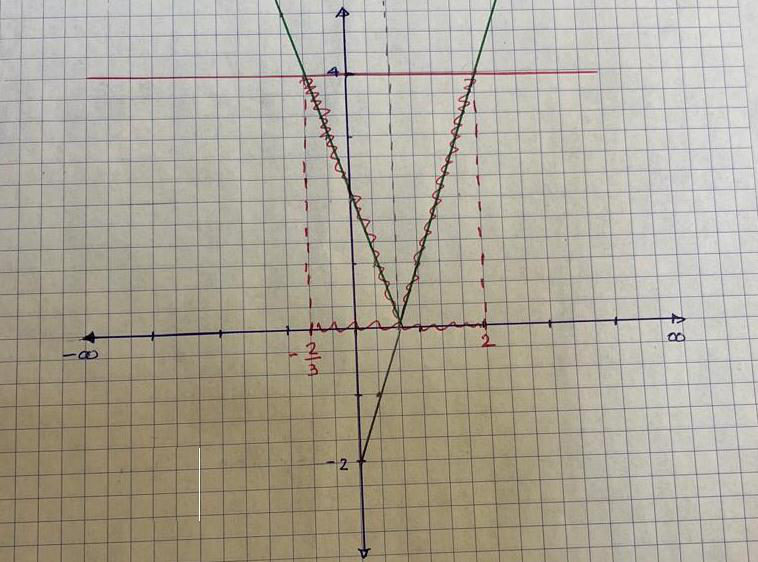
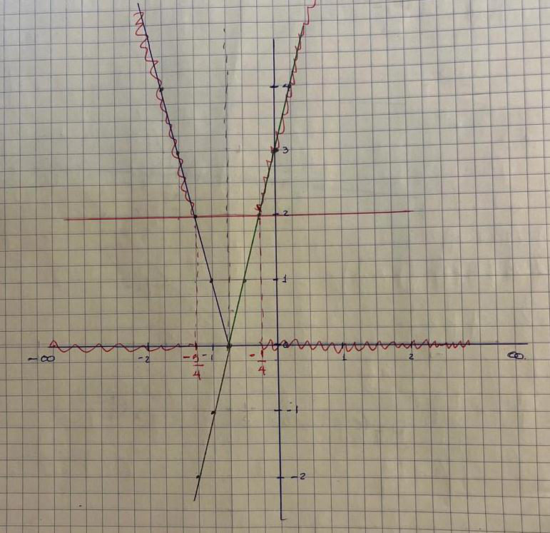

Que el estudiante comprenda el valor absoluto como la distancia de un número al cero en la recta numérica, lo represente gráfica y simbólicamente, y utilice sus propiedades para resolver desigualdades que involucran este concepto.
Definición
El valor absoluto de un número es la distancia que existe entre ese número y el cero en la recta numérica. Es decir,
Por ejemplo, |5| = 5 y |−5| = 5: tanto 5 como −5 están a 5 unidades del cero. Por eso el valor absoluto nunca es negativo.
Ejercicio en clase
Instrucciones. Determine los valores de x para las siguientes ecuaciones.
Gráfica del valor absoluto
Desigualdades con valor absoluto
Para resolver desigualdades que involucran el valor absoluto debes seguir los siguientes pasos:
Ejemplo 1
Escala: 1 unidad = 3 cuadros (porque el número que acompaña a la x es 3).
Trazamos la recta y = 3x − 2 (línea punteada), volvemos positiva la parte que queda debajo del eje x (línea gruesa en forma de “V”) y trazamos la horizontal y = 4. Como buscamos < 4, nos quedamos con la parte de la “V” que está debajo de la horizontal.
Por lo que la solución es el intervalo:
(−23, 2)
Ejemplo 2
Escala: 1 unidad = 4 cuadros (porque el número que acompaña a la x es 4).
Trazamos la recta y = 4x + 3, volvemos positiva la parte negativa y trazamos la horizontal y = 2. Como buscamos ≥ 2, nos quedamos con las partes de la “V” que están arriba de la horizontal.
La solución es:
(−∞, −54] ∪ [−14, ∞)
Si la desigualdad es < o ≤, la solución es la parte de la “V” que queda debajo de la horizontal (un solo intervalo). Si es > o ≥, es la parte de arriba (dos intervalos unidos con ∪).
Materiales y tareas
Próximamente: tareas y fechas de entrega.